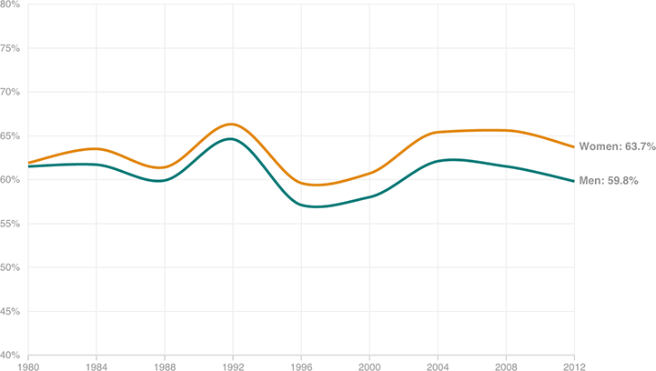

Women Increasingly Vote More Than Men
The voter participation gap between women and men has widened over the years. Below are the voting rates of both women and men in presidential elections since 1980.
